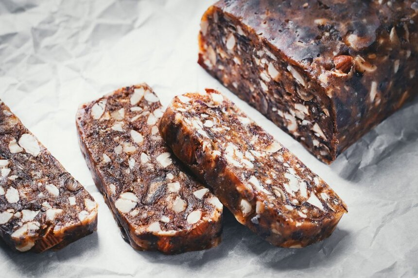

Datulių ir riešutų tinginys
Ingredientai:
- 500 gramų minkštų datulių (naudojau "Borna")
- 100 gramų anakardžių riešutų
- 80 gramų žemės riešutų
- 50 gramų migdolų
- 50 gramų graikinių riešutų
- 1 šaukštas aguonų
- 1 šaukštelis malto cinamono (žr. patarimus)
- 1 šaukštelis kokosų aliejaus (arba Ghee sviesto)
- 0.5 šaukštelio malto muskato
Paruošimas
Paruošimo laikas: Apie 30 min.
- Jei datulės su kauliukais, tuomet jas perpjauti pusiau ir išimti kauliukus. Susmulkinti nedideliais gabaliukais, tuomet gerai sutrinti šakute, jei turite, galima naudoti elektrinį smulkintuvą.
- Anakardžius, migdolus, žemės riešutus ir graikinius riešutus susmulkinti mažais gabalėliais peiliu. Arba trumpai pasmulkinti elektriniu smulkintuvu, tačiau visiškai smulkinti nereikia, užtenka, kad didesni riešutai būtų sukapoti į 3 - 4 dalis, o mažesni, pavyzdžiui, žemės riešutai perpjauti pusiau.
- Į keptuvę dėti pusę šaukštelio kokosų aliejaus, suberti riešutus ir paskrudinti 2 - 3 minutes. Tuomet išimti ir atidėti. Į keptuvę dėti likusį kokosų aliejų, suberti aguonas ir minutę apkepinti. Tuomet sudėti datulių masę ir gerai išmaišyti iki kol aguonos pasiskirstys. Suberti riešutus, cinamoną, muskatą ir gerai permaišyti kaitinant ant silpnos ugnies.
- Ant stalviršio patiesti kepimo popieriaus lapą, dėti paruoštą masę ir suformuoti tinginį. Susukti į popierių, palikti iki kol atvės, tuomet dėti į šaldytuvą bent 4 valandoms.
- Atvėsusį tinginį pjaustyti ir ragauti.